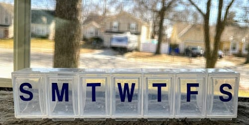
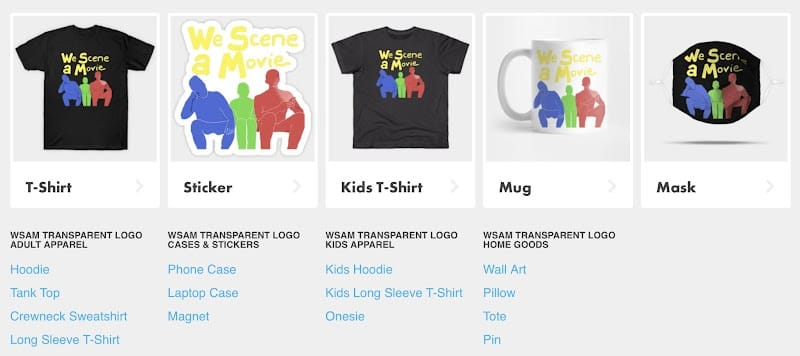
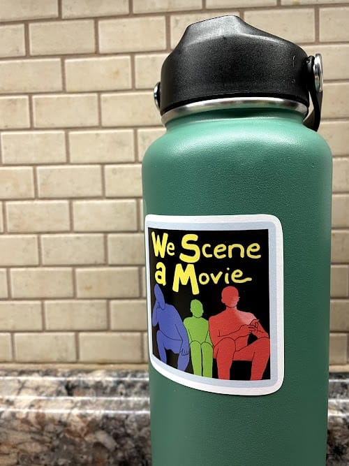

I promise to cover at least one fun thing in amongst all this seriousness.
Ankylosing Spondylitis
In Column #312 I talked about having a disease. Not the kind you get by not taking care of yourself, but the kind you just sorta… get. At the time the best I could say was that I had “undifferentiated spondyloarthropathy”, which isn’t so much a disease of itself as it is a family of related conditions. My diagnosis wasn’t “officially” specified beyond that back then. Now it is.
I have Ankylosing Spondylitis. I have for years.
Ankylosing Spondylitis is an incurable, progressively debilitating autoimmune disease that’s both not well understood and way more common than you’d expect1. It primarily affects the joints of the spine, especially where the spine meets the hips and the ribs, but it is commonly associated with other arthritic/autoimmune disorders involving the skin, hands/knees/feet, eyes, and bowels. Like many autoimmune diseases, problems come and go at seemingly random intervals. When you experience a flare, you don’t know if you’re in for days, weeks, months, or years, nor do you know whether the pain will be mild or severe. You’re just along for the ride, hoping your body will be good to you again soon.
Thankfully, my case had been relatively inactive for most of the past 11 years (since my first flare). I’ve had relatively few flares or ancillary issues popping up here or there. I’ve spent roughly half of the past dozen years not on any medications and living a completely normal, active life.
What Have You Done for Me Lately?
The past four months, though, have not been good to me. A flare hit right when my second child was born and has been here ever since. It started in my hips, but has settled down into the joints of my feet and, to a lesser extent, my knees. My feet are swollen. Walking is painful, so I hobble like an old man. If it were possible to have a double-limp, I would. My life has been a struggle of balancing treatments with parenting an infant & a 2 year old and dealing with some additional responsibilities at my job. That’s how these things work, though. It’s particularly cruel that flares tend to happen when you’re already stressed.

I’m already eating about as healthy as one can possibly eat & exercising 3+ times/week. I’m already on prescription-strength NSAIDs. Yet the problems persist. So I’ve taken another step towards the most aggressive treatment known to modern medicine. We’ll see how it plays out. If I’m lucky I can avoid regularly injecting myself with the 2nd most expensive drug on the market. In the meantime, I’m just taking life one day at a time. Doing my best to appreciate the countless blessings I do have rather than focusing on the few curses.
Imagine Dragons Segue
Not-so-fun fact: ankylosing spondylitis is what the song “Believer” by Imagine Dragons is about. In an interview with People Magazine the lead singer said something that I resonate with:
“A.S. requires you to live a more disciplined life” - Dan Reynolds, frontman of Imagine Dragons
That leads me pretty neatly into my next major topic.
Personal Data Warehouse
I have a naming problem.
I have a qualified-self ledger/journal that I’ve been iterating on since 2013. Originally I called it “The Life Tracker”, which might be the least creative, most cringey name. Truthfully I didn’t like it even back then. As I wrote about in Column #385, it took me 6.8 years to think of a better name: “data journal”… but lately I’ve been calling it something else.
I have a Personal Data Warehouse (PDW).
Or, I should say, I have Data Journal that I am working to turn into a Personal Data Warehouse.
What is a “Data Warehouse”? Well, without going into full nerd territory, a data warehouse is just a common location that stores copies of data generated elsewhere in an organized way. This allows you to continue to get data where its generated, but also have a single source against which you can build queries/reports/dashboards. If you prefer definitions from Wikipedia:
Central repository of integrated data from one or more disparate sources. - Wikipedia
Backpedaling Column #405
In my last post I talked about having started version 10 of my Life Tracking “Data Journal” via Google Sheets and the Google Apps Script. I started. Then I stopped. I saw a squirrel. The squirrel you were just introduced to. Version 10 of the Life Tracker is (probably) still going to happen. I want to create a good version of a Google-Sheets based PDW, but it’s not my first goal.
Aaron API
To make a PDW, I want something that isn’t so closely-bound to any underlying platform. See my Top 5 for possible implementation stacks, but what’s needed is an associated “Aaron API”2. I have dedicated a lot of time lately to thinking about the generic functions that would need to exist and specifying the interfaces between them.

The goal here is to define the rules of the game, that way I can substitute which technologies/hosts/languages are playing and retain a functional system. This allows me to update the data model and views built upon those data independent of one-another. If the boundaries of the controller are well-defined, a neat little dashboard I build can be migrated between a SQLite-based Django app and a MongoDB-based Node.js app with essentially no refactoring.
Moreover, as additional options become available (LOOKING AT YOU, NOTION API, I’ll be able to read from or write to them in a controlled manner.
Connection Between the Two Main Topics
I have an interest in keeping track of everything in my life because I have a disease that causes life-altering pain which comes and goes seemingly at random. If there’s any hope to find some sort of “trigger”, I need to keep track of what I was doing right before a flare happened. Because if I want to maximize the number of good, mostly healthy years I get to spend with my family, I need to be more diligent than the average person. Also because I’ve seen Google Image results for people who didn’t have Ankylosing Spondylitis well-managed, and that’s not something I’m willing to accidentally slip into.
Like Dan Reynolds says: Anklosing Spondylitis takes more discipline.
Other Topics!
Fun was promised.
WandaVision
The first (and, presumably, only) season of WandaVision is wrapping up in less than a week as of this writing. It’s been somewhat divisive show, surprisingly. Unsurprisingly, I have loved the show thus far. It’s the perfect balance of mystery, fun, lore-expansion, and style. Speaking of style - the original music composed for the show is the best thing that’s happened musically to the MCU. Period. Check it out:
Note: that playlist does contain one spoiler for anyone who hasn’t sent he show up to this point yet. If you’re clicking that link and you haven’t seen the show yet… who are you? Why are you the way you are?
We Scene a Movie Merch

I made a merch storefront for the podcast I co-host using TeePublic. This is both an advertisement for my podcast’s merch and also an endorsement of TeePublic for spare-time creatives like myself. I was genuinely shocked by how crazy easy/fast it was to establish an account and upload art3 and make it available for purchase on a wide array of reasonably-priced products.

I bought four WSaM stickers and got them to my door for less than 2 for those $12. Pretty neat!
Quick Thing I Noticed
When it comes to standards for 16x9 monitor/television resolutions - we skipped a generation when we went 4k.
720p ⇒ 1280 x 720 … 1280 + 720 = 2000
1080p ⇒ 1920 x 1080 … 1920 + 1080 = 3000
1440p ⇒ 2560 x 1440 … 2560 + 1440 = 4000
4k ⇒ 3840 x 2160 … 3840 + 2160 = 6000
What happened to the 16x9 resolution that adds up to 5000?
It turns out there’s a little known, little used resolution called “3K”, also known as “QHD+”. That’s 3200x1800 … 3200 + 1800 = 5000. I wonder why it got skipped.
Notes
My Notion-based Zettelkasten continues to be a rewarding thing I do. It’s publicly accessible here. I recently finished reading “Flow”. Which made for the 40th book broken down into atomic pieces and linked together as part of my growing body of notes. The 584 notes in there cover topics from productivity to health & fitness to society to data science and a bunch more.
Sometime this year I’m going to make a point to blitzkrieg those notes & turn them into a series of Gillespedia articles.
Top 5: Stacks for Implementing My PDW & “Aaron API”
5. Google Apps Script + Google Sheets
Google Apps Script web hosting, “main” UI, & logic. Google Sheets as both a data store & optional additional UI. I’ve had 9 versions of this combination in the past. Version 10 is still on my radar, although not as immediate as it seemed in my last post.
4. Google Apps Script + Firebase
Google Apps Script web hosting, UI, & logic. A Firebase Persistent Datastore as a basic database.
3. Glitch + MongoDB Atlas
What I’m actively using today.
2. Amazon Web Services + DynamoDB/Redshift/Aurora/Neptune/Timestream
In other words: just AWS. They’ve got all sorts of different databases-as-a-service products. I didn’t even name them all right there.
1. Local Raspberry Pi + Python + SQLite3
This is my newest, most exciting idea. I realized that I didn’t want to be dependent on any cloud-service provider in the long-term. So I’m actively working toward building a local python-based application using SQLite. This would serve more as a backup to whatever cloud-based solutions I’m rocking at any given moment… but also an enduring physically-accessible version of my data. Bonus points that it teaches me to use Python and SQL, both of which I’m 100% confident I can pick up and use and 100% ashamed that I’ve never really used before.
Quote:
I just walked to the kitchen and back, and I’m out of breath, so bear with me. Derek
Footnotes
-
Depending on the study you trust and/or what populations you want to consider, it’s somewhere between 1 in 15000 or as many as 1 in 1000 get the disease. Not everyone is equally affected, there is no “test” for AS, and this makes reliable diagnoses and population studies difficult. ↩
-
I recognize “Aaron API” is also an uncreative, cringeworthy name. I wonder what I’ll call it in 7 years. ↩
-
“Art”, lol. ↩